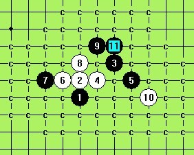
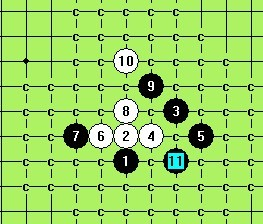
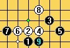

求教：疏星的一个局面
#1 求教：疏星的一个局面作者：华夏小宝 发表时间：2013-1-21 3:03:41
给出比较好的解答者 奖励鲜花10朵
这是实战中走出的局面 用软件初步验证 貌似也没有什么错误 但之后黑棋硬是没杀出来
问题:
1 这个局面即前28手，黑棋的应对是否正常？
2 这个局面之后，黑棋有无可能赢棋？
#2 Re:求教：疏星的一个局面作者：逆刃 发表时间：2013-1-21 11:14:23
第一个问题：黑棋前面漏杀了一次，9手在10位置活三就可以必胜了；
第二个问题：28之后，黑棋如下盖眠三的话，赢棋的机会非常大。
［ 华夏小宝 于 2013-1-21 15:31:07 时花20金币送鲜花一朵］
［ 华夏小宝 于 2013-1-21 15:31:07 时花20金币送鲜花一朵］
［ 华夏小宝 于 2013-1-21 15:31:07 时花20金币送鲜花一朵］
［ 华夏小宝 于 2013-1-21 15:31:07 时花20金币送鲜花一朵］
［ 华夏小宝 于 2013-1-21 15:31:07 时花20金币送鲜花一朵］
［ 华夏小宝 于 2013-1-21 15:31:07 时花20金币送鲜花一朵］
［ 华夏小宝 于 2013-1-21 15:31:07 时花20金币送鲜花一朵］
［ 华夏小宝 于 2013-1-21 15:31:07 时花20金币送鲜花一朵］
［ 华夏小宝 于 2013-1-21 15:31:07 时花20金币送鲜花一朵］
［ 华夏小宝 于 2013-1-21 15:31:07 时花20金币送鲜花一朵］
#3 Re:求教：疏星的一个局面作者：屏蔽 发表时间：2013-1-21 11:26:27
盖眠三慢慢套吧。
再说软件哪知道什么是对什么是错。
11-h10或h11我觉得黑棋都有不错的变化。
［ 华夏小宝 于 2013-1-21 15:31:47 时花20金币送鲜花一朵］
［ 华夏小宝 于 2013-1-21 15:31:47 时花20金币送鲜花一朵］
［ 华夏小宝 于 2013-1-21 15:31:47 时花20金币送鲜花一朵］
［ 华夏小宝 于 2013-1-21 15:31:47 时花20金币送鲜花一朵］
［ 华夏小宝 于 2013-1-21 15:31:47 时花20金币送鲜花一朵］
［ 华夏小宝 于 2013-1-21 15:31:47 时花20金币送鲜花一朵］
［ 华夏小宝 于 2013-1-21 15:31:47 时花20金币送鲜花一朵］
［ 华夏小宝 于 2013-1-21 15:31:47 时花20金币送鲜花一朵］
［ 华夏小宝 于 2013-1-21 15:31:47 时花20金币送鲜花一朵］
［ 华夏小宝 于 2013-1-21 15:31:47 时花20金币送鲜花一朵］
#4 Re:逆刃【==Re:求教：疏星的一个局面==】作者：华夏小宝 发表时间：2013-1-21 15:33:05
非常感谢逆刀大哥的指点
#5 Re:屏蔽【==Re:求教：疏星的一个局面==】作者：华夏小宝 发表时间：2013-1-21 15:34:45
十分感谢屏蔽大哥给出的前11手的变化。
#6 Re:华夏小宝【==求教：疏星的一个局面==】作者：换你一笑 发表时间：2013-1-21 22:03:34

你的八必败，最强的八在I11，不过7手定式是防右，后面定式按屏蔽大师的走。。。这个7黑比较弱，但没有败
［ 华夏小宝 于 2013-1-22 14:45:05 时花20金币送鲜花一朵］
［ 华夏小宝 于 2013-1-22 14:45:05 时花20金币送鲜花一朵］
［ 华夏小宝 于 2013-1-22 14:45:05 时花20金币送鲜花一朵］
［ 华夏小宝 于 2013-1-22 14:45:05 时花20金币送鲜花一朵］
［ 华夏小宝 于 2013-1-22 14:45:05 时花20金币送鲜花一朵］
#7 Re:华夏小宝【==求教：疏星的一个局面==】作者：换你一笑 发表时间：2013-1-21 22:14:06
刚开黑石看了下，发现黑石也能杀呀，我倒。。。你怎么用软件看的。。。#8 Re:换你一笑【==Re:华夏小宝【==求教：疏星的一个局面==】==】作者：sonix 发表时间：2013-1-22 13:14:23
引用：请给个弱7后白优的走法
原文由 换你一笑 发表于 2013-1-21 22:03:34 :你的八必败，最强的八在I11，不过7手定式是防右，后面定式按屏蔽大师的走。。。这个7黑比较弱，但没有败
［ 华夏小宝 于 2013-1-22 14:44:16 时花20金币送鲜花一朵］